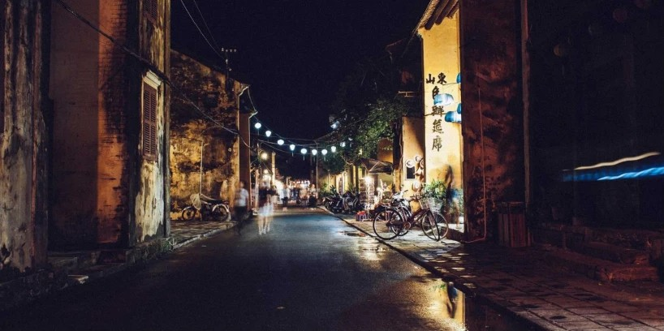

Travel Writing Kochi, Kerala
Kerala: God's Own Country

Kerala is rightly known as God's Own Country owing to the scenic beauty that it is blessed with. Sprawled towards the South West of this gorgeous state is the cultural and business hub of the city, the City of Kochi. Other than the mouth watery taste of its famous parotta and beef fry, this bustling city has a great historical and cultural significance, which ensures a huge tourist footfall every year. Overlooking the Arabian sea, Kochi is also known as the Queen of Arabian sea and has been a highly lucrative city from a business perspective since ancient times due to its ports and infrastructure.
It was a hot destination for the Chinese, Romans and Greeks in the ancient times. More lately, in the medieval times, Portuguese, British and the French utilized this city's magnificent ports to go about their businesses. Every group that visited this city left behind the imprints of their presence, which makes it a very unique city in its own right, which attracts a huge number of visitors from different states of the country, and foreign tourists.
5 Places to Visit in and Around Kochi
Kodanand Elephant Training Center
One of the most popular parts of the Ecotourism project started by the government of India, Kodanand Elephant Training Center is a well-preserved tourist magnet. The ecstasy of viewing an elephant at an arm's length, bathing and getting trained by professionals is a surreal experience that only the city of Kochi can offer. Especially for children, this place is as magical as you can imagine.
Andhakaranazhi Beach
To visit this scenic and sublime looking beach, you will have to drive about 80 kms outside of Kochi. But it is all worth it. Once you sit on this clean, virgin and untouched beach, you will experience the. You won't be alone, you might also witness some locals going about their everyday routine of catching fishes in their net. Its every bit as beautiful and enchanting as you imagine it being.
Marine Drive
Located in one of the busiest districts of Kochi, Ernakulam, Marine Drive is a place where you would find as many locals as the tourists. Don't be confused by the name, this serene and stunning looking promenade is not meant to drive on. Overlooking the backwaters, this part of the city is what frequently makes its place in Malayalam films. Oh, and it has the famous rainbow, which further makes this place a must visit.
Hill Palace Museum
When and if you feel tired of marvelling at the scenic beauty this city posseses, you might want to drop by the Hill Palace Museum. Converted into a museum in 1986 and previously an adobe of the Maharaja of Kochi, this museum takes you back to the era where the royal families of Kochi lived in style. You will find artefacts, crowns, jewels, weaponry, coins etc and also serves as a heritage museum, a deer park and a pre-historic park.